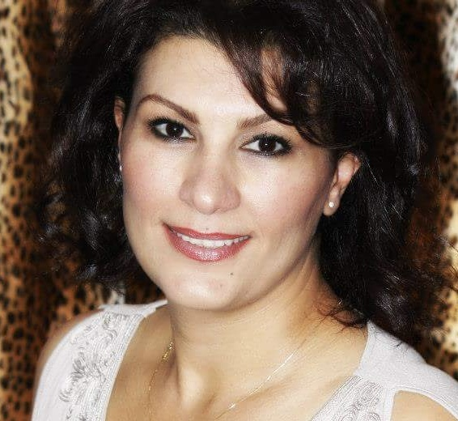

A Familiar Face, Bringing Care to Your Door
Get to know the person behind Neighborhood Toothfairy.

Meet Sharmin Zadeh
Sharmin is a dedicated dental hygienist with a passion for helping people maintain their oral health throughout every stage of life.
She earned her dental hygiene education at Cabrillo College and completed her RDHAP education at the University of the Pacific (UOP).
After years of serving patients in traditional dental settings, Sharmin recognized that many seniors, individuals with limited mobility, and patients with special needs face significant challenges accessing routine dental hygiene care. She created Neighborhood Toothfairy to bring professional, compassionate dental hygiene services directly to those who need them.
Her goal is simple: to make preventive oral healthcare more accessible while treating every patient with kindness, dignity, patience, and respect.
Call Sharmin — 408-427-6160“I believe everyone deserves the opportunity to maintain a healthy, comfortable smile, even when getting to a traditional dental office is difficult.”
Care That Meets You Where You Are
Our mission is to help people who may not be able to access traditional dental settings receive regular, quality preventive dental care. With the help of your friends, family, and caregivers, we work together to support better oral hygiene and overall well-being.
What Makes Our Care Different
Personalized Care
Care designed around each person's individual needs.
Comfort First
We bring care to an environment where the patient feels safe and comfortable.
Mobile Service
We bring the necessary equipment directly to the patient.
Compassionate Approach
Gentle, respectful care for patients and families.
Especially Valuable For Those Who...
- Have difficulty traveling
- Have mobility limitations
- Live in assisted living
- Live in skilled care
- Live in memory care
- Have special needs
- Experience anxiety about traditional dental offices
Bring Quality Dental Hygiene Care to Your Door
Whether you are looking for care for yourself, a loved one, or someone you care for, Neighborhood Toothfairy offers a flexible solution designed around individual needs.